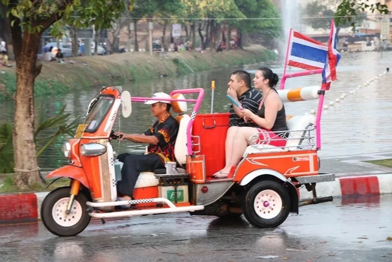

Chiang Mai is not just a city that hosts festivals. It is a city built around them. The Lanna kingdom that ruled this region for five centuries left behind a calendar of ceremonies, rituals, and celebrations that still define the rhythm of the year here. Some are known globally. Others happen in temple courtyards that tourists walk past without realising what is inside. After thirty years in this city, I have never stopped being moved by what happens here when the calendar turns.
Songkran: Pii Mai Muang (Thai New Year)
Bangkok has Songkran. Chiang Mai has Pii Mai Muang. The difference is not just language. Chiang Mai's version of Thai New Year is longer, louder, more culturally layered, and considerably wetter. The official dates are April 13-15, but in Chiang Mai the celebrations run from approximately April 6 through April 17. The old city moat becomes the centrepiece. The entire moat road turns into a continuous water fight for days. Everyone participates: locals, expats, tourists, monks watching from temple gates.
The water splashing is only the surface layer. Underneath it, Songkran is a profound renewal ritual. Families visit temples to make merit. Elders have their hands gently washed by younger family members as a sign of respect. Buddha images are ceremonially bathed. The Phra Singh Buddha image, one of the most sacred in Northern Thailand, is paraded through the city so people can offer water to it. If you are here for Songkran, attending the parade on the first morning before the water fighting begins gives you the Lanna version rather than the tourist version.
Practical reality: keep your phone in a waterproof case or leave it at home. Protect your passport and wallet. Wear clothes you do not care about. The temperature in April sits around 35-38 degrees, so getting drenched is genuinely refreshing rather than unpleasant. This is one of the great participatory experiences of living in Chiang Mai. Do not watch it from a café balcony.
Yi Peng: The Lantern Festival
Yi Peng is the most visually extraordinary event in Northern Thailand and one of the most beautiful things I have witnessed anywhere. It falls on the full moon of the second month of the Lanna lunar calendar, which typically corresponds to November. Tens of thousands of paper lanterns (khom loi) are released into the night sky simultaneously. When you stand at the river and watch them rise, it looks like the stars are moving upward.
The main public release happens at Tha Phae Gate and along the Ping River. The atmosphere is extraordinary but crowded. For a more intimate experience, many temples hold their own releases. Wat Phan Tao, adjacent to Wat Chedi Luang in the Old City, holds one of the most beautiful temple-based releases. Smaller crowd, more ceremony, less jostling for position. There is also a mass commercial release event held outside the city by private operators. These sell tickets to foreigners specifically and tend toward spectacle over substance. The free public releases along the moat are the real thing. The dedicated Yi Peng lantern festival guide covers logistics, viewing spots, and what to expect in detail.
Book accommodation for Yi Peng at least three months in advance. Prices double or triple during the festival. Some hotels sell out six months ahead. This is not an exaggeration.
Loy Krathong
Loy Krathong happens the same night as Yi Peng, on the full moon of the twelfth lunar month. The two festivals are distinct but overlapping. Loy Krathong involves floating decorated baskets (krathong) made from banana leaves, flowers, and incense on waterways. The tradition is to place a lock of hair or nail clippings on the krathong along with a candle and coins, then release it on the water as a symbolic letting go of bad fortune.
In Chiang Mai, the Ping River is the primary location for krathong releases. The riverbank from the Night Bazaar area north toward the Nawarat Bridge fills with vendors selling krathongs and with families participating in the ritual. The combination of floating lanterns above and floating baskets below, both carrying candlelight, is one of those moments that stays with you long after you have left. Chiang Mai's version of Loy Krathong retains more ceremony than the versions in Bangkok or beach resort towns, which have become primarily tourist events.
Poy Sang Long: The Ordination Festival
Most tourists never encounter Poy Sang Long because it does not appear in mainstream tourist itineraries. This is their loss. Poy Sang Long is the Shan Buddhist ordination ceremony for young boys entering the monkhood, held in March and April across Chiang Mai's Shan community temples. Young boys are dressed in elaborate princely costume, their faces painted and their heads adorned with flowers and gold, and they are carried on the shoulders of their fathers and relatives in procession to the temple. The ceremony symbolises the belief that the Buddha himself was a prince who renounced wealth for spiritual practice.
The main Poy Sang Long events happen at Wat Pa Pao on Chang Moi Road, a Shan temple that has held this ceremony for generations. It is open to respectful visitors. Go quietly, observe temple etiquette, and you will witness something that connects directly to Chiang Mai's identity as a city where Lanna, Shan, and Thai cultures have layered over each other for centuries. Understanding this layering is part of what the understanding Thai culture guide explores in more depth.
Makha Bucha
Makha Bucha is a Buddhist observance day held on the full moon of the third lunar month, typically in February. It commemorates the occasion when 1,250 enlightened monks spontaneously gathered to hear the Buddha teach, without prior arrangement. The event is considered one of the most important dates in the Theravada Buddhist calendar.
Temples across Chiang Mai hold candlelit processions (wien tien) after dark. Worshippers walk three times clockwise around the main temple building holding candles, incense, and lotus flowers. Wat Suan Dok and Wat Phra Singh both hold beautiful processions. The atmosphere is contemplative rather than celebratory. Alcohol sales are restricted by law on Makha Bucha day. Shops that sell alcohol will be closed or refusing to sell. Plan accordingly.
Visakha Bucha
Visakha Bucha, the holiest day in the Theravada Buddhist year, commemorates the birth, enlightenment, and death of the Buddha, all of which are said to have occurred on the full moon of the sixth lunar month (May or June). Temple attendance across Chiang Mai is at its highest. The wien tien processions happen again, with larger crowds than Makha Bucha.
Chiang Mai's large community of actively practising Buddhists means Visakha Bucha here has a sincerity that is different from tourist-facing Buddhist events elsewhere. The temples are full of people who are there for genuine spiritual observance, not for photographs. Visitors are welcome but should approach with corresponding respect: modest dress, quiet demeanour, no flash photography during processions.
Other Events Worth Knowing
The Flower Festival happens in early February, typically the first weekend, when the cool season flowers are at their peak. Floral floats parade through the city. The Nimmanhaemin area and surrounding gardens are spectacular with colour. This is genuinely beautiful and considerably less commercialised than it sounds.
The Winter Fair runs across December and January near the Chiang Mai Stadium. Local food stalls, craft vendors, live music, and the cool season temperatures make it one of the most pleasant general outdoor events of the year. Locals far outnumber tourists. Prices are local prices. It is the kind of low-key event that expats who live here treasure and that people who visit for a week never find. If you are based in Chiang Mai during the cool season, it is worth an evening visit. The broader picture of what life in the city actually looks and feels like across the seasons comes through in the living in Chiang Mai guide.
Festival Calendar at a Glance
February: Flower Festival, Makha Bucha. March-April: Poy Sang Long. April: Songkran / Pii Mai Muang (6-17). May-June: Visakha Bucha. November: Yi Peng and Loy Krathong (full moon). December-January: Winter Fair. Book accommodation three to six months ahead for Yi Peng specifically. Every other festival you can handle with two to four weeks' notice in most years.
Guru Tip: The best viewing position for the Yi Peng lantern release along the river is not the Nawarat Bridge, which gets impossibly crowded. Walk north along the east bank of the Ping River to the stretch between the Iron Bridge and the Nakhon Ping Bridge. The crowds thin out, you are at water level rather than bridge height, and the perspective of lanterns rising over the river with the Old City lights behind them is better than any bridge view. Get there by 5pm to claim a spot.
Frequently Asked Questions
When is the best festival to visit Chiang Mai?
Yi Peng (November) and Songkran/Pii Mai Muang (April) are the two most distinctive experiences. Yi Peng is visually extraordinary but requires accommodation booked months in advance. Songkran runs longer in Chiang Mai than anywhere else in Thailand, usually 10 days, and is a genuine community celebration rather than a tourist event.
Is it safe to attend Songkran in Chiang Mai?
Yes, with common sense. The water fights are good-natured and crowd volumes are manageable in most areas. Keep phones and wallets in waterproof bags. Avoid riding motorbikes during peak Songkran hours as visibility is reduced by water and the roads are congested and slippery.
How crowded does Chiang Mai get during Yi Peng?
Very crowded. Hotels within 3 kilometres of the Old City can fill 3 to 4 months ahead. Prices spike significantly. The Old City and Nawarat Bridge areas are packed on the main lantern release evening. If you are attending, plan accommodation and transport logistics well in advance.
Are there any smaller festivals worth attending in Chiang Mai?
Poy Sang Long (March to April) is a Shan Buddhist ordination ceremony where young boys are dressed as princes. It is culturally specific and far less touristy than Yi Peng. Flower Festival (February) is photogenic and local in feel. Both are worth experiencing if you are in Chiang Mai at the right time.
Do I need to buy tickets to see the Yi Peng lantern release?
The public lantern release along the Ping River is free and accessible to everyone. Paid private events organised by tour operators offer a controlled release with unlimited lanterns, food, and a staged experience. Both are valid. The free public release is more chaotic but more authentic.
Guru Tip
For Yi Peng, skip the bridge crowds entirely and find a spot on the riverbank near Ping Bridge. The crowds thin out, you are at water level rather than bridge height, and the perspective of lanterns rising over the river with the Old City lights behind them is better than any bridge shot. Get there by 5pm to claim a spot.